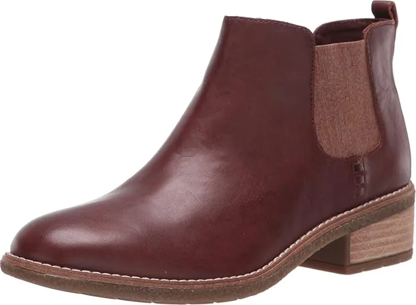
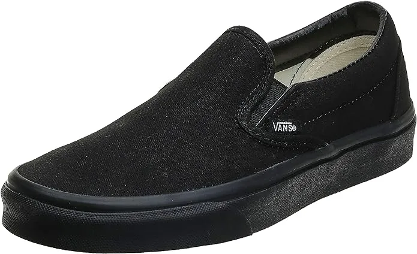
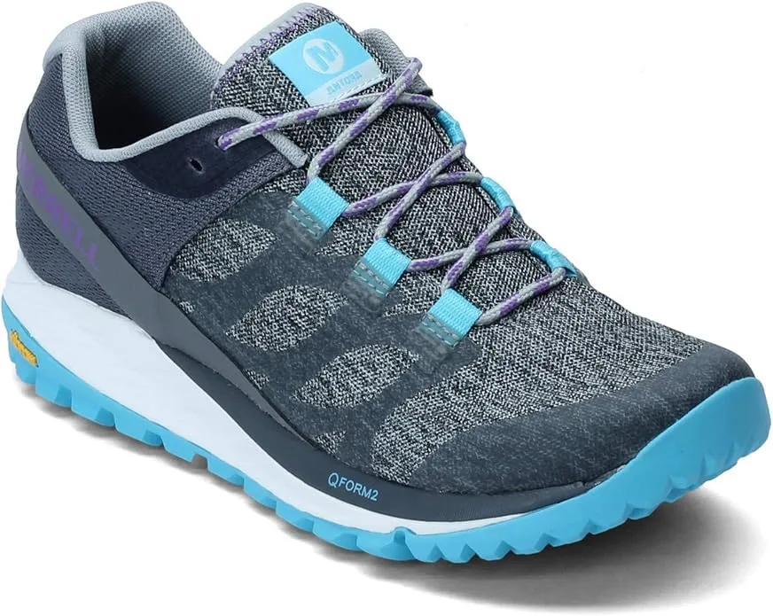
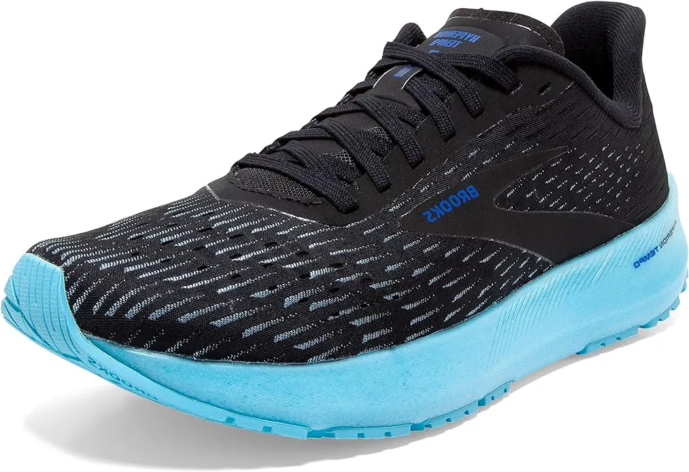
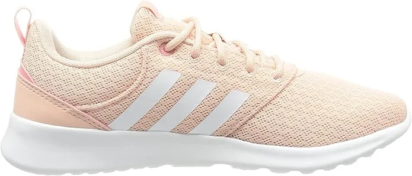
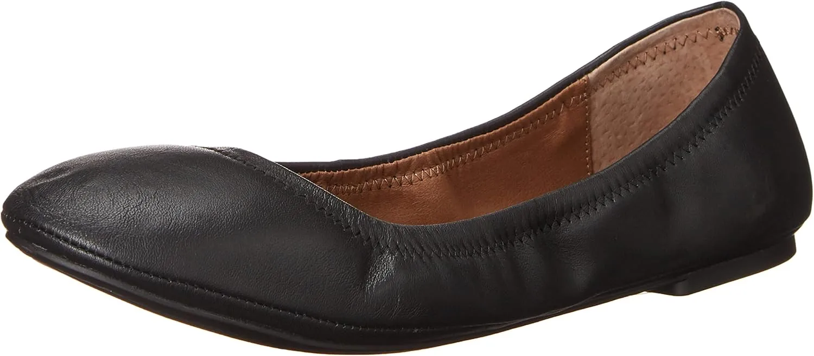
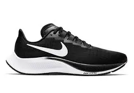
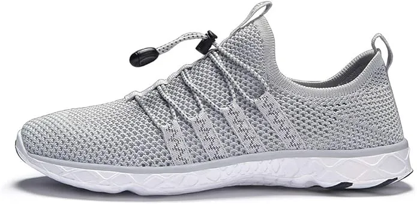
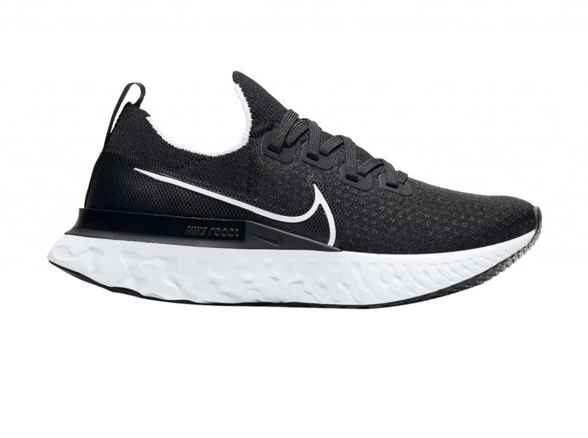
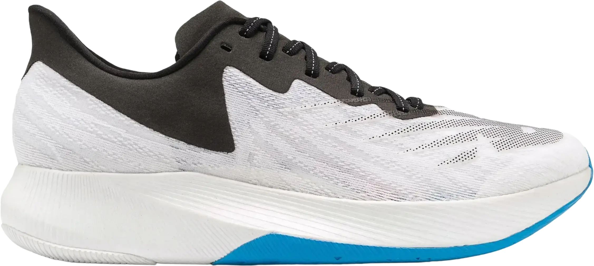

10 Best Women’s Running Shoes For Travel in 2024
Best Women’s Running Shoes For Travel 2024 It’s a sure thing that traveling is fun only when you have comfortable best women’s running shoes for travel on your feet. Besides, for a recreational trip or for formal business flights, one always has to rush and walk as if something has lost! In fact, if you have already planned each and everything prior to your trip running shoes Travel, yet some of the unexpected work Women’s is always there to make us hurry and wind up at the eleventh hour. Hence feet are in the center of attention. But prior to that, packing selection of the best women’s running shoes for travel can be really tiresome_, especially for ladies.
Luckily, their best men’s dress shoes for standing all day are quite formal in appearance yet you get the best comfort from them. So, today we will especially discuss the men’s shoe that will bring professional solace to the feet with the sleek touch of style within. The brand and name we have included are quite well-known and people have given positive responses Shoes for Standing on Concrete to their footwear. Let’s get to know the insights.
-
#1
Sperry Maya Chelsea Boot
Every woman wants to be stylish and comfortable at the same time. That said, this Sperry Maya Chelsea boot is one of the most suitable options of all time. Besides, it is quite a well-known name for ladies who never compromise on their looks! Its decent and modish look and secure interior make sure your feet are quite snug and well-placed. The imported material with traction synthetic sole provides the most stable footsteps. Moreover the leather upper is all about travel elegance and high-class impression. The quality of the leather has been chosen as quite a concern.
You can wear this boot regardless of the wear and tear of the quality. Its durability speaks of itself. Furthermore, its interior has been embedded Morton’s Neuroma with soft and sleek padding that never lets you feel awkward annoyance while walking briskly. Due to the soft interior, you get your feet free from abrasion. -
#2
Vans Classic Slip-On Sneaker
This shoe is all about premium comfort and a nice wearing experience throughout the traveling. The best part is that this Vans Classic Slip-on Sneaker creates the anticipated comfort on your toes. Its thick and plush outsole and sober look allow you to put on with various casual outfits. However, this one can also be paired with denim jeans and a casual outfit to meet the day-to-day look. The welcoming features and high-quality manufacturing design has been made with women’s comfort in mind! The rubber sole with white hue is all about elegance and casts a sleek impression.
Moreover, the synthetic leather uppers are just about a sleek impressive look. Its low-profile appearance and lace-less design make it fall into the slip-on category. The signature rubber waffle outsole is suitable if you are looking for a shoe that provides all-rounder traction and a slip-resistant running experience. -
#3
Merrell Women’s Antora Sneaker
Next up on the list, we have got this Merrell Women running shoe for travel. Besides, the style and professional design with the touch of a modern look is best for taking it to planned travels. The rubber made sole with Q FORM technology in the midsole makes sure you have the best comfort in feet while walking. Besides, you do not get the impacts and have those painful jerks.
Certainly, the Hyper lock TPU heel keeps you secured and allows gripping footsteps on every floor. The textile and fabric choice has been kept user-friendly due to which your skin does not get abrasion or rashes after prolonged wearing.
In addition to that, the breathable mesh keeps your feet cool and dry by allowing airflow to pass easily. The toe box is quite wide and features comforting padding within. With that, the rubber pods in the forefeet create stability whereas the high-quality EVA is shock-absorbent and quite relaxing for all times. The Vibram® TC5+ technology on the outsole has been designed to work on diverse pathways making sure traction and foot stability. -
#4
Brooks Women’s Hyperion Tempo
The best women’s running shoe for travel has to be quite friendly and durable enough to provide additional traction. No matter which medium of traveling you are choosing, running and walking hastily is kind of inseparable. Therefore, you have to choose a shoe that effectively caters the traction and foot stability to every point. The rubber used on high-wear areas makes sure your shoe maintains its durability and appearance in combination with secured feet inside.
This shoe features the DNA FLASH. It’s complete-length inner cushioning with infused foam let your feet unwind and better feelings towards walking and running. Besides, the foam features the nitrogen cell with the help of a liquid. All this technology has made sure to flexibility and resilience to the energetic foot movements. The fabric on the insole allows a better fit and airflow as well. The softness and comfort is a by-product. Due to the mesh uppers, this shoe is best for traveling and trips. The ventilation and airflow isn’t a problem with this shoe anymore. -
#5
ADIDAS Women’s Cloudfoam Racer
This Adidas Cloudfoam Racer for women is the shoe that can serve you the best and quite precisely in travel haste. No matter what walking or running style you have but the effective design and comfort features will let you feel the utmost relaxation for the day along.
First of all, the outlook is quite trendy and stylish hence giving you the opportunity to wear it for various formal and casual trips with much confidence. The rubber outsole is traction and controlled friction. You can rely on its gripping approach on the sleek and misty floor. With thick offset and springy interior, you can run and jog with no cancers of jerks and impacts at all.
Its ultra-soft inner padding and sock liners take the shape of your foot to bring in comfort and solace. The low-tops design and mesh made upper is a great way to make sure ventilation as well. Besides, the mesh overlays feature five-pair eyelets with smooth and strong laces to enhance the security and snug-fitting. Hence, running in travel doesn’t bring slipping or loosening of the shoe in any way. -
#6
Women’s Lucky Brand Emmie Flats
This is a slip-on pump-style shoe with decent and sober impact. The breathable man-made lining lets the airflow in and keeps feet comfortably dry and cool. Moreover, the dry feet promote slip-less gripping footsteps. Its flat design enhances the gait while uncontrolled maneuverability of feet while running. The resilient and durable rubber sole works on all terrain and roads with no fear of wear and tear. Its high-quality design shoes and material make it perfect for continuous waking for traveling. Moreover, the lightweight design with just 4 oz of weight makes the wearing time ergonomic.
Now, if you talk about the padding and interior of this shoe you get the premium quality and dedicated design inside. The footbed and comfort liners create day-long comfort on your feet. It has a rounded counter toe-box and easy-to put on overall design makes your choice more preferable in comparison with any other shoe. -
#7
Nike Air Zoom Pegasus 37
Nike has always come up with something exceptional and up-to the mark for its customers. This time this shoe has been dedicated to the women who are planning the travel with the anticipated haste and hurry.
The breathable mesh net for ventilation is really an appreciable feature of this running shoe. It keeps you off sweating and slipping feet for hours of wearing time and hence you get more control over your walking, running, and stroll. The mesh upper covers a large part of that shoe and regulates the airflow for challenging hot weather.
You will be surprised to know its advanced design, this time Nike has engineered this shoe with an airbag that has been placed in the forefoot area. Therefore, whenever your toe hit the ground you do not get the jerk and impact on the sensitive joints. It readily absorbs the hitting effect. The responsive and resilient cushioning makes the running pace fast and swift. The fitting and stretchy fabric assists you in having a comfortable run. -
#8
Allbirds Dasher Women’s Running
Allbirds is a trusted brand for obvious reasons. If you are fed up with your old pair of shoes that have failed to provide you the anticipated comfort during the travel run. This shoe has a very light feel with the assurance of durable material used.
Furthermore, the mesh upper features the best breathability and you remain cool and dry. Moreover, the machine wash design allows you to keep your footwear new and clean every time you wear. If you are traveling for warm weather, this can be a perfect choice.
In combination with that, the uppers with the antimicrobial lining make sure you maintain hygiene as well. The inside of this shoe is quite well-padded and resilient also. It’s EVA Sweet-Foam is shock absorbent. Its 7mm of heel drop is best for running and brisk walking.
The seamless durability with knitted one-piece upper has been certified by FSC®, it makes sure you have the best fitting and comfort wearing. Moreover, you can also machine wash this shoe to get rid of the smudgy and stubborn dirty marks. Keep the shoe as new as it was once. Washing and cleaning it with water doesn’t deform the material nor does it affect its durability in any way. -
#9
Nike Women’s Infinity React
With the release of this Nike Infinity React shoe has become the style statement for women who love a running shoe with a touch to the style. Its rubber sole is quite durable and has the ability to work on various terrains like bumpy rough roads and sleek slippery pathways.
Moreover, the Flyknit loft technology makes it furthermore ergonomic by keeping its weight under control. Long hours of wearing don’t bring heaviness and tiredness on your vulnerable feet. Its high foam sacks are pretty much flexible. Due to the irrepressibility features and design your walking and running become more like gliding. It never puts a strain on ankle and knee joints.
Moreover, the Nike React foam in the midsole lets you have the enhanced interior padding and cushiony feel. The 34mm in the heel and 25mm in the forefoot allows a more comfortable and prompt approach. The outer sole has been dedicated with special attention to magnify the stability in footsteps. No matter how fast you run, its rigid patterns do not let you slip. However, the flexible foam and rubber is good when you jump around, as it absorbs the shock. The outsole promotes natural foot movement and lets you get a carefree walk on all terrains. -
#10
New Balance Fuelcell TC
Certainly, there are a lot of shoes that casts an impression for various purposes. However, New Balance shoes are quite different from the rest. From exterior to the interior you do not regret buying this one. Besides, if you are going for a hiking trip for some outing travel please, this New Balance Fuelcell TC proves to be suitable for all types.
The resilient and 6mm of thick offset with springy foam you can keep wearing it for longer times. Its knitted appearance, rubber made sole and stylish design never lets your expectations down. Moreover, the rippled rubber outer sole for full-length coverage offers you the best ever traction of all types of ground, be it rough terrain and sleek floor like that of an airport.
Besides, the upper with kin mesh makes sure the ventilation and proper airflow. Furthermore, this near balance shoe has to offer you the TPU heel design so that you get the best fitting without hurting your heel or making you uncomfortable in any way. So, you can clearly infer that wearing this shoe is sheer bliss in combination with stylish designing.